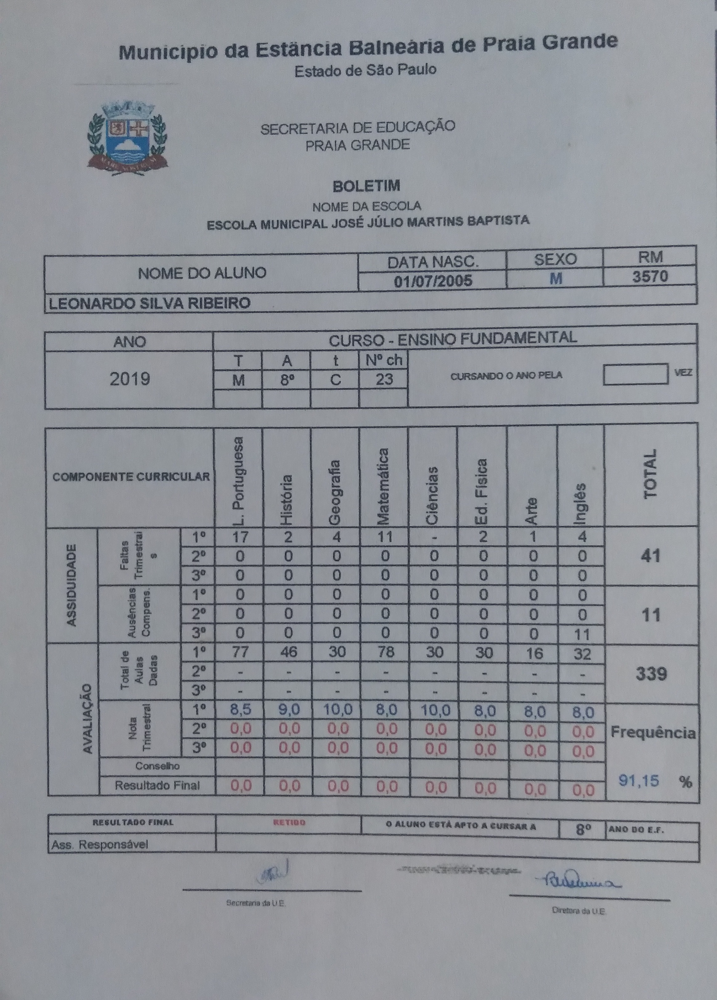
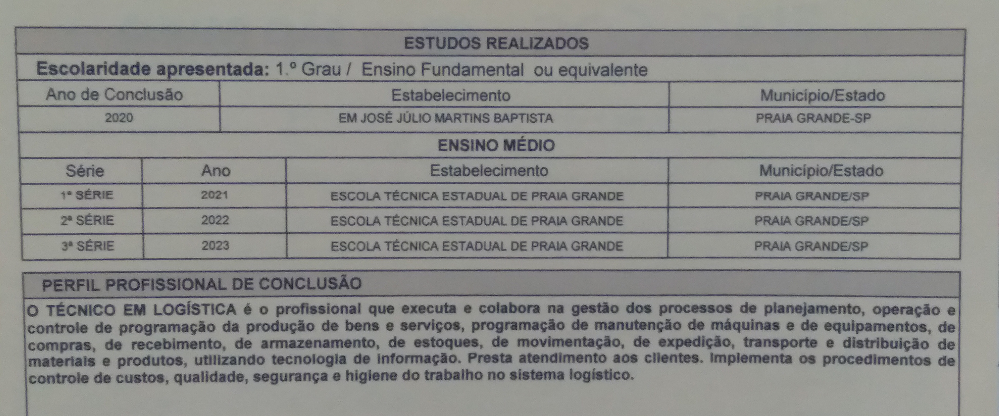

Eu estudei em escola pública durante toda a minha vida. Comecei estudando até o primeiro ano do fundamental em uma escola municipal chamada Luiza Borba Ranciaro. Depois disso, fui para a Escola Municipal José Julio Martins Baptista, onde estudei durante a maior parte da minha vida. Nela, estudei do segundo até o nono ano do Ensino Fundamental.
Após terminar o fundamental I e II, realizei o Vestibulinho, processo de seleção necessário para alunos poderem entrar em ETECs. Fui aprovado na modalidade de Ensino Médio Integrado ao Ensino Técnico de Logística.

Todas as três escolas são em Praia Grande-SP. Atualmente, estudo na modalidade à distância na faculdade Uninter,
no curso de Análise e Desenvolvimento de Sistemas.
Também possuo inglês básico, no nível A2. Pessoalmente falando, sou muito bom lendo, embora minhas capacidades de ouvir e falar sejam realmente básicas.